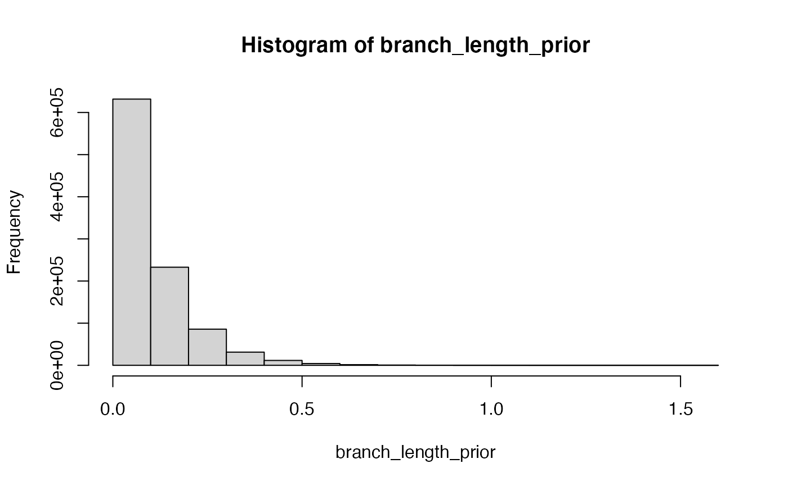

LikelihoodCalc.Rmd
row1 <- c(0.0, 1.0, 1.33, 1.0)
row2 <- c(1.0, 0.0, 1.0, 1.33)
row3 <- c(1.33, 1.0, 0.0, 1.0)
row4 <- c(1.0, 1.33, 1.0, 0.0)
rate_mat <- matrix(rbind(c(row1, row2, row3, row4)), nrow = 4)
colnames(rate_mat) <- c("A","C", "G", "T")
rownames(rate_mat) <- c("A","C","G", "T")
rate_mat## A C G T
## A 0.00 1.00 1.33 1.00
## C 1.00 0.00 1.00 1.33
## G 1.33 1.00 0.00 1.00
## T 1.00 1.33 1.00 0.00These are the rates of change. You may see these called exchangeabilities. Now, let’s create a vector of base compositions.
Now we make what is called the Q matrix:
Q_unscaled <- rate_mat * Pi
Q_unscaled## A C G T
## A 0.000 0.400 0.532 0.400
## C 0.100 0.000 0.100 0.133
## G 0.266 0.200 0.000 0.200
## T 0.300 0.399 0.300 0.000Next, we want to scale the Q matrix such that the rows sum to zero.
rowsums <- rowSums(Q_unscaled)
rowsums## A C G T
## 1.332 0.333 0.666 0.999
for (i in 1:4){
Q_unscaled[i, i] <- -rowsums[1]
}
Q_unscaled## A C G T
## A -1.332 0.400 0.532 0.400
## C 0.100 -1.332 0.100 0.133
## G 0.266 0.200 -1.332 0.200
## T 0.300 0.399 0.300 -1.332Next, we compute a diagonal sum for the matrix. This is used to normalize your Q matrix.
offdiags <- function(mat = matrix){
diag_sum <- sum(diag(mat))
off_diag_sum <- sum(i) - diag_sum
return(off_diag_sum)
}First we transform by the matrix diagonal of pi.
b <- Q_unscaled * diagonal_pi
b## A C G T
## A -0.5328 0.0000 0.0000 0.0000
## C 0.0000 -0.1332 0.0000 0.0000
## G 0.0000 0.0000 -0.2664 0.0000
## T 0.0000 0.0000 0.0000 -0.3996And this gives us a scaling constant.
scaling <- offdiags(b)
scaledQ <- Q_unscaled/scalingNow we use this to calculate a likelihood of observing a particular branch length per site:
Pr(Branch Length per site) = scaledQ * BranchLength. For example, if we have our Q matrix, and the branch length is .1, the below are the probabilities of seeing a change between those characters on that branch:
longish_branch <- scaledQ*.05Now lets imagine we have two taxa, and we have an alignment like so:
Taxon1 = CCAT Taxon2 = CCGT
The probability will look like this:
Likelihood(Data | Model) = Probability(C) * Pr(C --> C) * Pr(C) * Pr(C-->C) * Pr(A) * Pr(A --> G) * Pr(T)* Pr(T-->T) In code, this will be
Pi[2]*longish_branch[2,2] * Pi[2]*longish_branch[2,2] * Pi[1] * scaledQ[1,3]*Pi[4]*longish_branch[4,4]## [1] -2.333216e-10Priors reflect a prior belief about a variable in the analysis. In this case, for example, we may believe a branch length to be drawn from an exponential distribution. Take a look here at the exponential:

Let’s try the above calculation with a prior included.
branch_length_prior <- rexp(1, 10)
prior_branch <- scaledQ*branch_length_prior
Pi[2]*prior_branch[2,2] * Pi[2]*prior_branch[2,2] * Pi[1] * scaledQ[1,3]*Pi[4]*prior_branch[4,4]## [1] -1.157985e-09